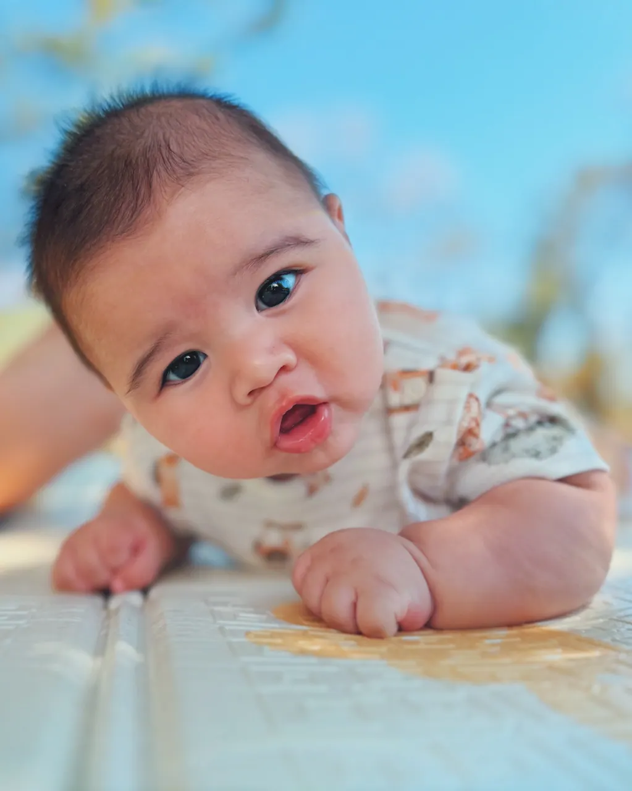

InícioEnsaios
Fotografia · Cuiabá e região
Ensaios e retratos.
Fotografias de bebês, crianças e famílias, nos primeiros dias de vida e nas ocasiões que merecem ser lembradas. Vamos conversar sobre seu próximo ensaio?
Seleção do portfólio
Infância e família
Retratos ao ar livre, aniversários e momentos em família. Toque nas fotografias para ampliar.



Seleção do portfólio
Primeiros dias
Os pequenos detalhes e retratos dos bebês na maternidade.


Vamos conversar
Planeje seu ensaio.
Me conte que tipo de fotografia você procura. As opções de cobertura e disponibilidade são alinhadas pelo WhatsApp.